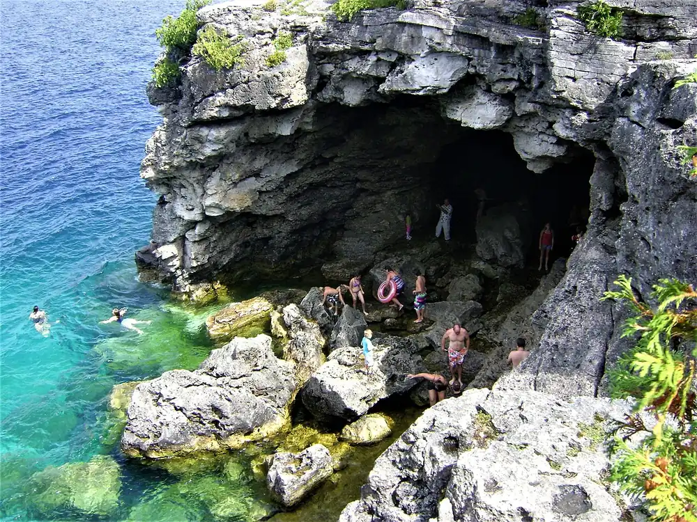

The Grotto — Bruce Peninsula
Ontario, Canada · baignade

Grotte marine creusée dans les falaises calcaires de l’escarpement du Niagara, au bord de la baie Georgienne, dans le parc national de la Péninsule-Bruce. L’eau turquoise et limpide rappelle les Caraïbes, mais elle reste fraîche.
- Lieu
- Ontario, Canada
- Niveau
- Intermédiaire
- Activités
- baignade
- Type d'eau
- lake
- Coordonnées
- 45.25, -81.52 (position approximative du secteur)
Dangers à connaître
- Eau froide et profonde, sans plage : on entre depuis les rochers.
- Rochers glissants et sauts depuis les falaises à l’origine de blessures.
- Pas de surveillance de baignade.
Le conseil d'Ocean Buddy
Réserve ton créneau de stationnement à Cyprus Lake auprès de Parcs Canada et viens tôt : l’accès se fait à pied, puis par des rochers.
Ouvrir dans Ocean Buddy Télécharger sur l'App Store
Source : Fiche Ocean Buddy · septembre 2026 · à vérifier localement.